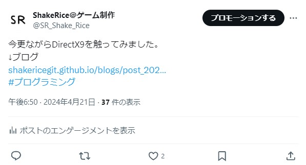
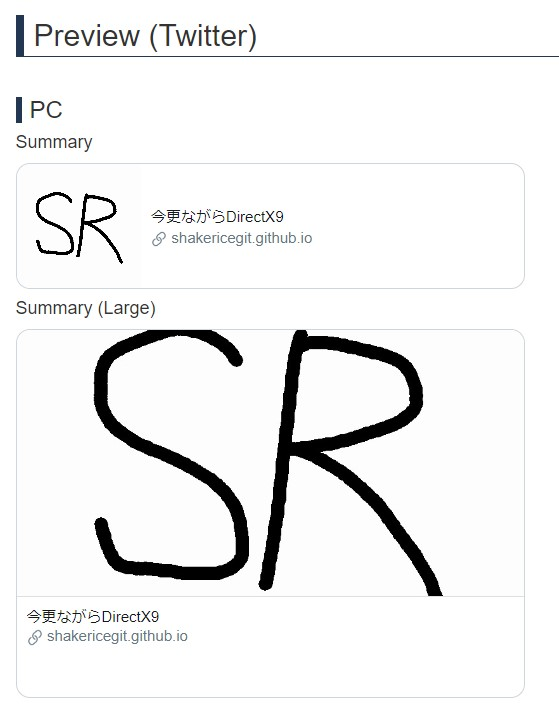

X(Twitter)で自作ブログのアイキャッチ画像を表示する方法
↓Twitterでブログを宣伝した際の実際の投稿

これだとまったく目を引かないし、人によっては怪しいサイトだと思われても仕方がない。
そこで、もっと目を引かれやすくするための「アイキャッチ画像」を表示する方法を紹介します。
アイキャッチ画像を設定する方法
やることは簡単。
headタグの中に以下のコードを入れて設定するだけ。
<!--必要最低限のコード-->
<meta name="twitter:card" content="アイキャッチ画像の設定"/>
<meta name="twitter:site" content="@TwitterのID"/>
<meta property="og:title" content="Twitterに表示するブログのタイトル"/>
<meta property="og:url" content="記事のURL"/>
<meta property="og:image" content="アイキャッチ画像のパス"/>
<!--その他使える設定(一部)-->
<meta property="og:description" content="ページの説明文" />
<meta property="og:site_name" content="サイト名" />
<meta property="og:type" content="ページの種類" />
<meta property="og:locale" content="言語の指定"/>
「twitter:card」について
「twitter:card」の設定の種類には
- summary
- summary_large_image
- app
- player
の4種類があります。
「summary」はデフォルト。「summary_large_image」は大きめに表示。
「app」はアプリ配布用、「player」は動画配信用らしいです。 (使ったことないけど)
注意点
アイキャッチ画像について
- 画像のパスは相対パスではなく絶対パス 例:「https://.../*.jpg」
- 画像の最小サイズは300px × 157px、最大サイズは4096px × 4096px
- 画像のサイズは5MB未満
- サポートされている画像の形式はJPG、PNG、WEBP、GIF
twitter:cardで表示される画像のアスペクト比
- 「summary」1:1
- 「summary_large_image」1.91:1
きちんと表示されているか確認する方法
Twitterカードがきちんと表示されているかを確認するための公式サイトが存在しますが、すでにサポートが終了されており、プレビューが表示されないため、
OGP確認ツール
こちらのサイトを使うことをおすすめします。
このサイトではどんな内容が設定されているのかをすべて確認することができるため便利です。
↓プレビューもきちんと表示されます。
実際の投稿
今更ながらDirectX9を触ってみました。
— ShakeRice@ゲーム制作 (@SR_Shake_Rice) April 21, 2024
↓ブログhttps://t.co/dgWJSrkMwG#プログラミング
2024/04/28
ブログ記事一覧に戻る